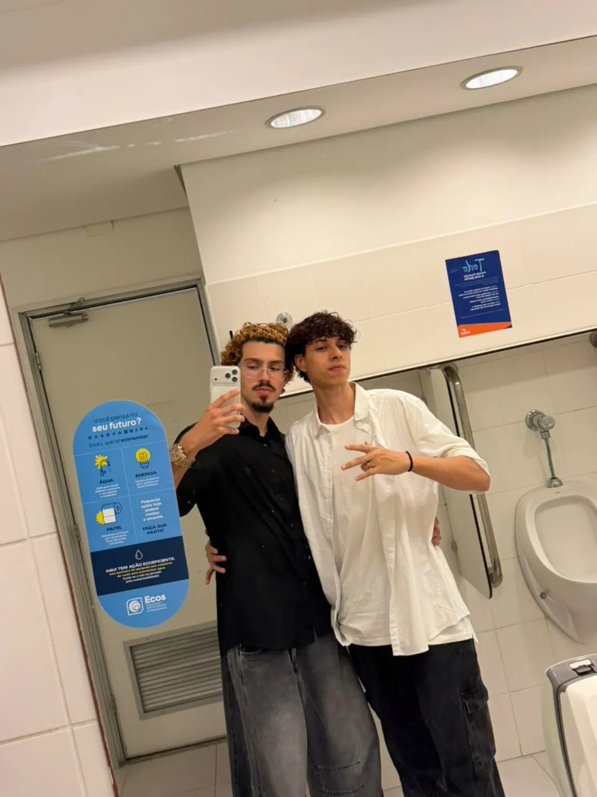
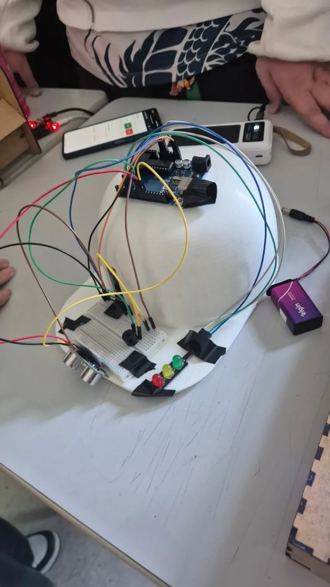

REGISTROS & EXPERIÊNCIAS
Memórias
Atividades, encontros, projetos e materiais que ajudam a contar a história da formação.
REGISTROS QUE CONTAM HISTÓRIAS
Momentos de aprendizado.
Esta página reserva espaço para fotos, vídeos e documentos reais das aulas, da esteira e de outras atividades. A fotografia de apresentação não substitui uma evidência técnica do projeto.

Registro pessoal
Fotografia utilizada na apresentação do estudante.

Boné assistivo
Protótipo com sensor ultrassônico, LEDs e buzzer para sinalizar a proximidade de obstáculos.

Auto carimbador de notas
Projeto em MDF criado para automatizar o carimbo de notas em atividades escolares.
03 / DOCUMENTO
Relatório técnico
Inserir um relatório, código-fonte ou apresentação dos projetos quando estiverem disponíveis.